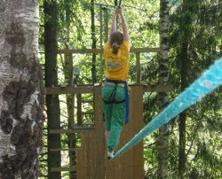

Aarholt-tunet leirskole har svært variert aktivitetsprogram gjennom dagen og gjennom uka.


Elevene får oppleve egenmestring, samhandling, ansvar og undring, og
alle aktivitetene kan relateres til kunnskapsløftet.
(Se underside "for lærerne".)


{kind=link}
Aarholt-tunet leirskole har 23 nyrestaurerte, koselige og egenartede
rom, fordelt på to stabbur, to tømmerhytter, 5 rom i låven og 5
leiligheter i bryggerhuset.
Rommene har fra to til seks soveplasser.
Det serveres fire måltider hver dag med god mat.

Aarholt-tunet leirskole, tegning: Inga-Hilde Breivik

Flåtepadling i Villmarkstunet

Hver leirskoledag har elever ansvar for dyrestell

Bøke-knopp i utvikling, Aarholt-tunet leirskole

Noen av oss som dere møter på leirskolen

En av leirskolens kosne sauer

Klatreveggen på leirskolen har tre vanskelighetsgrader

En dag er vi i kufjøset på nabogården

Bålkos i Villmarkstunet

6 meter over bakken i Burma-brua

Kosne sauer og lam på Aarholt-tunet leirskole

En av broene i Tarzanløypa

Natt over leirskolen